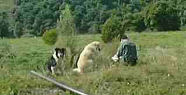
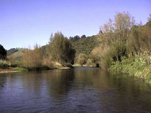

釣行日誌 ＮＺ編
３月 かすかな秋の気配
2001/03/03 (SAT)
スプリングクリークの今まで行ったことの無かった国道の橋から上流。魚は多い。けっこう良い型の鱒を何尾も釣る。なかなかいい渓相の区間である。
一発目は、例のポイント、もこっと出た。淵の流れ込みで掛けた鱒を、散々粘られたあげくバラす。ダブル仕掛けで掛けた鱒、ドライに淵で出た小さい鱒。広い淵で派手に出て、派手にジャンプした鱒。最後の淵で、粘ったあげくにスティミュレーターで出た大物、などなど。
2001/03/04 (SUN)
スプリングクリークの別の国道から下を釣る。いい渓相だがなぜか出ない。
淵の頭にデカイのが居たが、粘ったにもかかわらず無視される。良いポイントがあるのだが、なにか変だ。突然の夕立、雷鳴にビビリながら、藪の下で雨宿りして、やり過ごす。最後に橋の下200mのところで32cmを１尾掛ける。よく引いて、よく跳ねた。Ｏさんにおみやげとなる。
2001/03/10 (SAT)
スプリングクリークの支流、瀬のポイントから入る。 増水でポイントが絞りきれずに、長い瀬のどんづまりの淵まで来る。対岸の弛みをしつこく攻めて、２尾掛ける。が、取り込む途中でティペットがプツン。やはりちょっと大きいのを掛けると４ポンドはすぐ切れる。
３尾ポイントの下の瀬の終わりで、１尾ドライで見事に掛ける。
有名な木立の下の大物３尾ポイントには、しっかり３尾居た。（笑） 下流へ回り、静かに対岸から攻めて、40,48,42cmと、３尾釣る。もっとも、最初の１尾は予想外の場所から出た。魚に引きずられて取り込みに苦労し、淵と瀬の終わりまで、約60mを３往復させられた。水が冷たい冷たい。
腹を紅く染めた大物レインボーがジャンプするのは、何度見ても肝が冷える。
夕方、小物のライズがあふれていた。気温が下がって水生昆虫がまた、羽化の時期を迎えているようだ。
やめる寸前に出会ったおじさんが、帰り際に声を掛けてくれた。秋の夕暮れ。
2001/03/24 (SAT)
朝から山岳渓流の中流部に入る。右曲がりのいつもの淵で何も出ない。不信の幕開け。以降、８時から３時まで６番ロッドを振りまくって30cmのレインボーと20cmのブラウンを１尾ずつという貧しい釣果。
そこここに、良型のブラウンやレインボーが見えるものの、渇水と晴天で魚の活性が低い。水温も17℃とやや高め。幾度となく繰り返されるライズに向けて、幾度となくフライを交換しては攻めまくったが、スカを喰らう。やれやれ、ここのブラウンは賢い。
これではやめられないので夕方から最下流の砂利置き場に車を止め、イブニングライズに賭ける。案の定、魅惑的な大きな波のライズリングを発見。14番のアダムスを10回以上流してようやく釣れたのは35cmの虹鱒。このサイズがこれだけ渋くては、大物レインボーやブラウンは渋くて当然であろう。きちんとフライが自然に流れないと見向きもしない。
対岸の流木の影で盛んにライズする大きな鼻に見事アダムスを流し込んだが、一瞬で枝に潜り込まれて糸を切られる。１秒おきの天国と地獄。
久しぶりに暗くなるまでライズを狙う。何の変哲もない渕尻でまずまずのレインボーがいくつもヒットした。あと一月か二月、冬が来るまでドライフライが面白くなるだろう。
2001/03/25 (SUN)

お昼から、昨日に引き続き、山岳渓流へ。ワンちゃんの牧場でサンドウィッチを食べて、しばし犬たちと戯れる。
瀬に居着いてニンフを喰っている気むずかしいブラウンを攻める。大きいのがいくつもいるがフライを喰わない。
二股のカーブの上流にある長いトロ淵で、柳の枝の下流から会心のライズを会心のタイミングで捕らえた。と、思ったら、派手なジャンプで黄金色が輝く。 難しいこの川のブラウンを、ようやくドライフライでしとめた。 と、うれしがっていたら、上がってきたブラウンは下を向いている。なんと尾鰭の直前にスレでフックが刺さっている。いつまでも弱らずに抵抗する魚をようやく取り込むと、45cmのブラウン。丸々と太って体格もいい。これでスレがかりなら引くわなぁ。
さらにその上流で、ライズを二つ発見。光線の加減で非常に見にくいのだが、影は大きい。ニンフ、ドライ、各種試した後でようやくアダムスに出る。ストライク。しかし、盛期のブラウンの体力はものすごく、４Ｘが切れらるのを恐れてだましだましファイトしたあげく、主導権をにぎれないまま藪に逃げ込まれて切られる。細いティペットは無理が利かないだけ、掛けるまで有利でも掛けてから不利である。それを使いこなすのが腕か？ ファイトの仕方を研究しなければいかん。
夕方、Ｎ君と同じ場所に入り、崖崩れの荒瀬まで行く。Ｎ君がニンフで大物ブラウンをヒットさせたが、さんざん下流に走られてばらしてしまう。この川のブラウンを釣れるようになれば、まずまず、の腕であろう。二人とも、まだまだ精進が必要なことを痛感した日曜日であった。
魚は居る。しかし釣れない。早い話、腕が悪いのである......
2001/03/31 (SAT)

山岳渓流へ。 朝、ワンちゃんの広場から川にはいると、陽光が辺り始めた水面で、ぽつんぽつんとライズが始まる。
アダムスを４lbのティペットに結び、慎重にキャスト。ドンピシャのタイミングのつもりがすっぽ抜け。以後、見切られつつも苦労して掛けると、約30cmのブラウントラウト。くねくねと重いファイト。
その上流５ｍぐらいで、またしても会心の合わせ。と、思いきや、なぜかまたもすっぽ抜け。合わせが早いのか、遅いのか？ 疑問はつきないが、しつこく狙っていると、意外と近くで魚影が見えるので、エルクヘアカディスにコパーヘッドのフェザントテールニンフの仕掛けで流す。と、白いカディスがすいっと水面に沈む。ラインを手繰って合わせると、重い走りが下流へ突っ込む。細いティペットを案じながら、そろりそろりと寄せてみると、まるまる太った虹鱒。一安心。
以後、何の変哲もない単調な流れに潜む鱒たちを探りながら遡行する。木の株の後ろで小さな水しぶき。懲りずに数回流したカディスをとうとうくわえたのは30cmの虹鱒。
ここぞ！ という絶好の流れ込みで、浮かんできた大きな鼻面が、フライをくわえ損ない、一度沈んで再度フライの上に覆い被さった。見とれているうちにたるんだラインを大急ぎでたぐり寄せ、なんとか合わせると荒瀬の中心で大きなジャンプが連発した。40cm以上の魚体に驚いたが、ラインがロッドに絡んでいるのにも驚いた。途切れること無いジャンプに、大慌てで絡みを直す。なおも数回のジャンプを繰り返し、見事なレインボートラウトがネットに収まった。安堵のひととき。
二股のカーブの下流で、遠くから見つけたライズにアダムスを流し、会心の（こればかりであるが、当人は、いつも会心のストライクと思っている.....）当たりをとるが、なぜかファイトの始まる前に外れた。バーブレスフックのせいだろうか？
見晴らしの長い淵では、立木の後ろも流れ込みも沈黙のまま。カーブまで来て、それらしいライズがあったが何の返答も無し。
新しい柵に沿って、長い淵を攻めるが、不用意に近づいて鱒を驚かしたり、流し終わって引き上げかけたカディスに鱒が飛びついたりと、ちぐはぐな釣りが続く。
先週、Ｎ君が大物をバラした長淵では、今日も良型がさかんにライズをしているが、アプローチを間違えて魚を散らしてしまう。
その上のロングストレッチでは、60cmのブラウンを目撃して背後７ｍまで息を潜めて近づき、必殺のパラシュートを送り届けるがまったく無視される。それでは、と、流したニンフの二投目で、なぜか魚に気取られ、あっというまに逃げられる。なぜ？ Whyyyyyyyy？
暗くたたずむ例の大淵では、何も魚影を発見できず、その上の淵で小さなライズを発見。今度は３Ｘのティペットにアダムスを結び、きっちりキャストすると、浮かんだ黒い頭がフライをくわえて水中に戻る。せぇの！ で合わせるといきなり魚体は上流にダッシュし、ドラグを響かせてラインをほとんど引っぱり出す。いつまでも弱らない体力に驚いたが、ネットに入ったのは42cmぐらいのレインボー。唇の上に、外側からフックが刺さっていた。
一日、会心のストライクと縁遠かった秋の渓流であった。
釣行日誌ＮＺ編 目次へ
サイトマップ
ホームへ
お問い合わせ